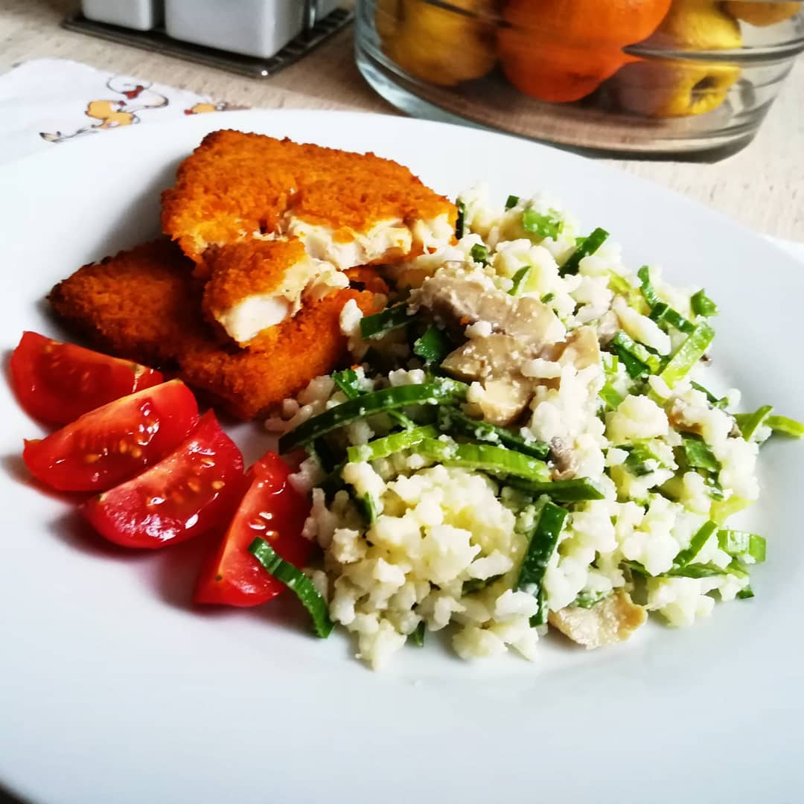

Pečená ryba podľa @zelenymi.ocami — Normy Jedál
Dobrú chuť k obedu všetkým. Na čom si pochutnávate vy?
My si dáme obaľovanú rybku pečenú - nie vyprážanú, a RYŽOVÝ ŠALÁT:
Základom je teda uvarená ryža, k nej som pridala nakrájaný pór, nastrúhaný syr (parmezán), nakladané, rozkrájané huby (bez nálevu) a nakoniec pár lyžíc majonézy (tofunézy alebo sojanézy - výber je na vás).
Dobre premiešať a nechať chvíľku postáť.
Ešte raz dobrú chuť k obedu.
.
.
#myglutenfreemeals #glutenfreelunch #salad #salaty #salatka #bezglutenovejedlo #bezglutenu #bezlepku #singluten #obedik #dobruchut #ryzovysalat #ryza #rice #ryż #pecenaryba #fishandsalad #foodinsta #foodinsta #foodstagram #foodgram #glutenfreegram #rychlyrecept #recepty #glutenfreerecipes #obiadek #obiad #bonapetit #jemdoma #dnesjim